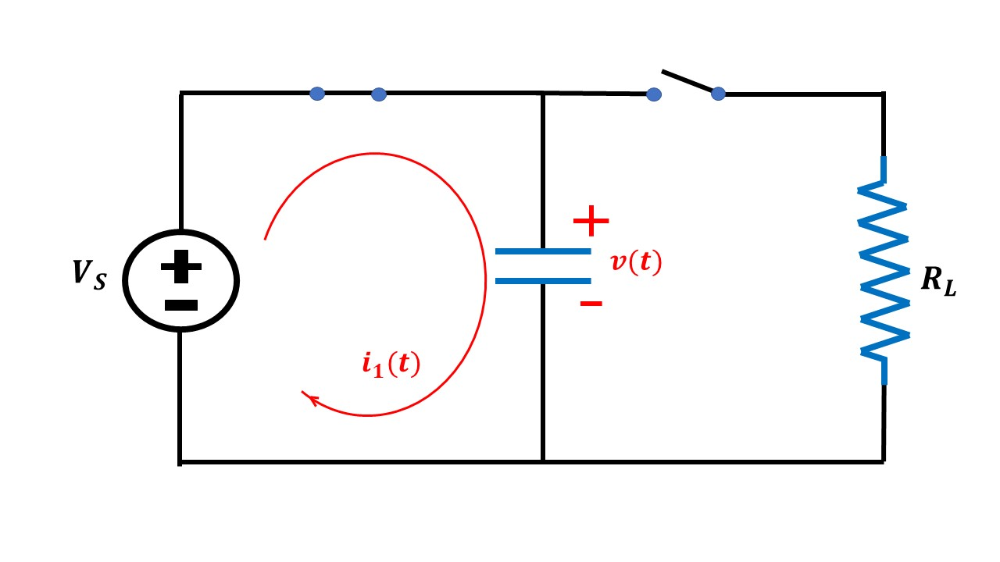
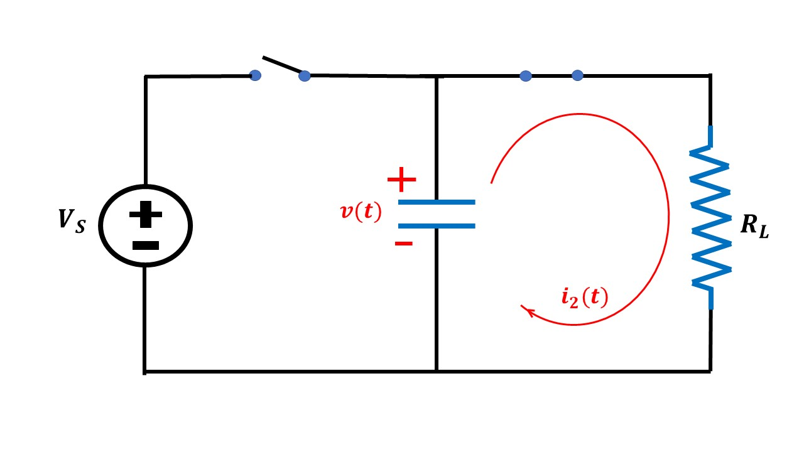
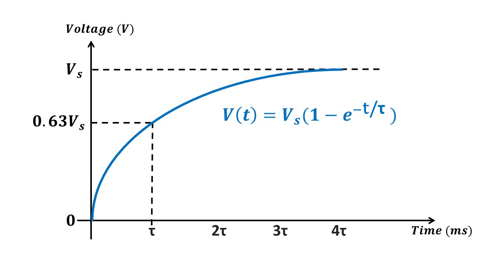
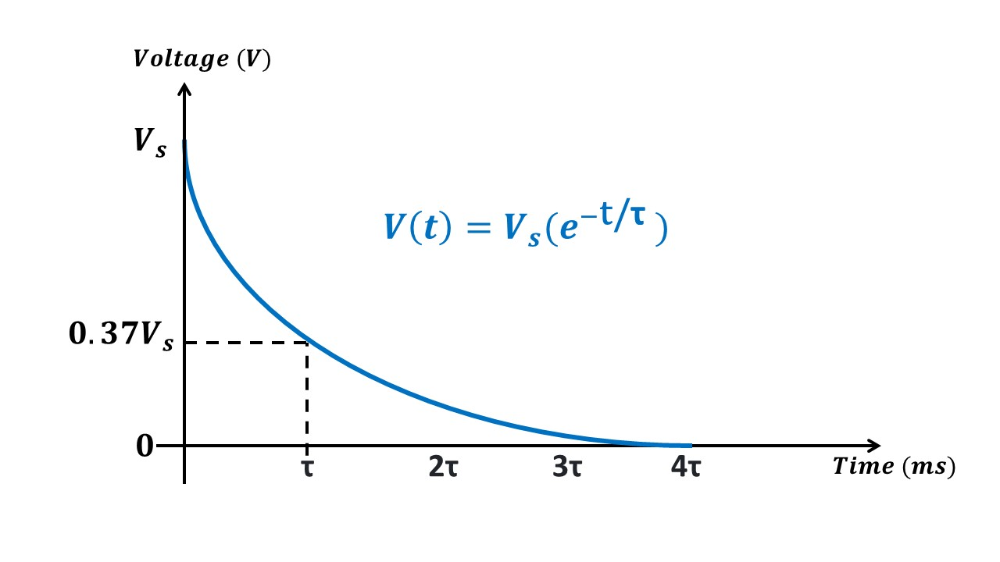

Study of Clamper Circuits
Available Components
1. Diode
| Diode Name | PIV | Vf | If max | Is max | Datasheet | |
|---|---|---|---|---|---|---|
| 1 | 1n4002 | 100 V | 1.0 V | 1.0 A | 30 A for 8.3ms | 1n4001 |
| 2 | 1n4004 | 400 V | 1.0 V | 1.0 A | 30 A for 8.3ms | 1n4007 |
| 3 | 6A8 | 800 V | 0.9 V | 6.0 A | 400 A for 8.3ms | 6A8 |
| 4 | 6A10 | 1000 V | 0.9 V | 6.0 A | 400 A for 8.3ms | 6A10 |
2. Resistor
| Resistance | Current Rating | Tolerance | |
|---|---|---|---|
| 1 | 500 Ω | 5 A | 2 % |
| 2 | 1000 Ω | 5 A | 2 % |
3. Capacitor
| Capacitance | Operating voltage | |
|---|---|---|
| 1 | 220 µF | 1200 V |
| 2 | 470 µF | 1200 V |
Prerequisite Concept: Time Constant of RC circuit
| Charging of Capacitor | Discharging of Capacitor | |
|---|---|---|
| 1 |  |  |
| 2 | During charging, current enters the capacitor through the positive terminal. |
During discharging, current leaves the capacitor through the negative terminal. |
| 3 |  |  |
| 4 | Time constant (τ) is the time required to charge a capacitor (C) through a resistor (R) from initial votlage value of zero to 63.2 % of applied DC voltage. |
Time constant (τ) is the time required to discharge a capacitor (C) through the same resistor to approximately 36.8% (100% - 63.2%) of the initial voltage |
Note:
- During charging and discharging, the voltage polarity of capacitor remains the same but the current polarity reverses.
- It takes approximately 5 time constants (5τ) for a capacitor to charge from zero to applied voltage or discharge from initial value to zero.
Choosing Diode
I. Diode must withstand the forward surge current (capacitor charging current)
- Initially, the capacitor is uncharged.
- The diode will be forward biased, only for a very short duration, when the input signal is fed to the circuit.
- Through this forward biased diode (acts as short circuit path), a large current flows and the capacitor gets charged very quickly.
- The capacitor charging current is an exponentially decaying current which dies out in approximately 5*τ
- Since there will be very little resistance (say, R ≅ 0.1Ω) in this short circuit path, time constant (τ = R*C) is very negligible, in the order of µs. Hence the capacitor charges very quickly (in the order of µs)
II. Diode must withstand the voltage applied across it
- Once the capacitor is charged, the voltage across diode (VAK ) is always negative. So, the diode will hereafter remain reverse biased.
- The voltage across the load resistor (output voltage), appears across the reverse biased diode.
- The diode must be able to withstand this output voltage.
- The maximum value of output voltage must be lesser than the PIV (Peak Inverse Voltage) of the diode specified in the diode's datasheet
Choosing Capacitance and Resistance
I. Capacitance must charge very quickly and discharge very slowly.
- The capacitor will be charged via short circuit path produced by forward biased diode. This happens within one half cycle since short circuit current is very large and time constant in short circuit path is very negligible.
- In the steady state operation of clamper circuit, diode will always be reverse biased. So, the capacitor tries to discharge through load resistor.
- But, in order to get the desired output, the capacitor should not discharge when input is applied to the circuit.
- So, the time constant (R*C) is designed such that, Time constant >= Time period of the input.
- In our virtual lab, the input signal is assumed to have 50Hz frequency. Hence time period is 20 ms. So, time constant must be atleast 200 ms to make sure the capacitor doesn't discharge.
II. Capacitor must be able to store Vpeak voltage without damage.
- The operating voltage of the capacitor must be higher than the peak value of the input voltage.